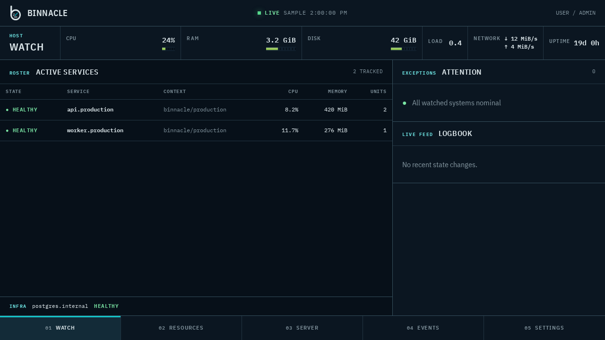

FIELD MANUAL / DOCKER SERVER MONITOR
Know what your server is doing.
Binnacle is a lightweight, Coolify-aware watch console for Linux servers running Docker workloads. It groups logical services, keeps history in local SQLite, and streams current state without a separate observability stack.

OPERATING PRINCIPLES
Designed to observe, not operate.
- 01.1
Local-first storage
Core monitoring works offline. Metrics and events remain in the server’s SQLite database.
- 01.2
Low overhead
One Go binary, embedded frontend assets, and bounded collection suit small servers.
- 01.3
Coolify awareness
Coolify and Compose workloads are grouped into logical resources while plain Docker remains supported.
- 01.4
Read-only operation
Binnacle does not stop, restart, delete, or exec into containers. It only observes.
- 01.5
Live updates
Server-sent events carry fresh host and resource snapshots as collection completes.
- 01.6
Local history
Configurable retention and a database budget bound locally retained metrics and event logs.
DEPLOYMENT SEQUENCE
Quick start with Docker Compose.
- 01
Prepare installation secrets
export BINNACLE_SETUP_TOKEN=$(openssl rand -hex 32) export DOCKER_GID=$(getent group docker | cut -d: -f3) - 02
Start the supported Compose deployment
docker compose -f https://raw.githubusercontent.com/drilonrecica/binnacle/master/packaging/docker/docker-compose.yml up - 03
Commission the server
Open
Open deployment guidehttp://localhost:8080, enter the one-time setup token, create the local administrator, and complete diagnostics.
FIELD REFERENCE